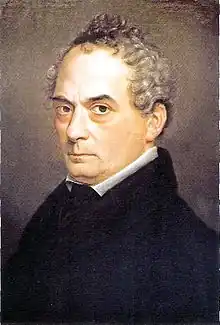

БРЕНТАНО, Клеменс і АРНІМ, Людвіґ Ахім фон (Brentano, Clemens — 08.09.1778, Єренбрейстен — 28.07.1842, Ашаффенбурґ; Arnira, Ludwig Achim von — 26.01.1781, Берлін — 21.01.1831 Віперсдорф) — німецькі письменники.
Імена Клеменса Брентано та Ахіма фон Арніма в історії німецької та світової літератури назавжди стоять поряд. Обидва — вожді гейдельберзьких романтиків, збирачі та популяризатори народної поезії, автори збірки "Чарівний ріг хлопчика" — книги, про яку Й. В. Ґете сказав, що "вона з цілковитим правом повинна бути в кожному домі". І водночас кожен з них залишив неповторний слід у німецькій літературі та культурі.
Брентано — романіст, поет, автор новел, казок, веселих п'єс, знавець і колекціонер стародавніх текстів і книг і... одна з найзагадковіших постатей в історії романтичної літератури. Він народився в сім'ї Петера Антона Брентано, італійського негоціанта, який переселився в одне з найбільших торгових міст Німеччини — Франкфурт-на-Майні. Петер Брентано належав до достатньо заможних людей, його справа процвітала, але особисте життя не склалося. Померла перша дружина, залишивши старшого Брентано з п'ятьма дітьми на руках. Клеменс, як і його сестра Беггіна, відома німецька письменниця, народився від другого шлюбу, в якому було 12 дітей, але й цей союз закінчився передчасною смертю другої дружини — Максиміліани Ларош. Тато Брентано, багатодітний батько, попри все, намагався дати всім дітям освіту. Але ні навчання в гімназії (1788—1790) міста Кобленця, де Клеменс познайомився з майбутнім теоретиком і критиком Йозефом Герресом, ні заняття у виховному інституті Вінтервебера в Мангеймі (1791-1793), ні навчання в Бонні (1793), ні вивчення камеральних наук у Галле (1797—1798), ні дворічне перебування в Єні (1798—1800) не давали підстав для висновків про особливу старанність учня. Маючи замкнутий і впертий характер, Клеменс віддавав перевагу вправлянню в поезії та малюванню над заняттями. І тут, очевидно, проявився вплив жіночої лінії в родоводі автора роману "Годві". Бабуся Клеменса — Софі Ларош — замолоду була нареченою відомого письменника Х.М. Віланда, зберегла дружню і літературну прихильність не лише до нього, а й до Й.В.Ґете, І.Г. Ґердера. Софі Ларош залишила свій слід і в літературі як автор роману "Історія Фрейлін фон Штернхайм" (1771), який свого часу набув популярності і вплинув на створення "Страждання юного Вертера" Гете. Найстарша дочка Софі Ларош — Максими-ліана, матір Клеменса, була також не позбавлена любові до мистецтва. Юний Гете, часто буваючи в домі Брентано, був закоханий у Максимиліану і відтворив її образ не лише на сторінках "Поезії і правди", а й "Страждань юного Вертера". Клеменс протягом усього свого життя зберіг особливу прихильність до матері, вона для нього була предметом не лише любові, а й обожнення. У жінках, які відіграли величезну роль у творчій біографії Брентано, він завжди шукав і почасти знаходив риси схожості з матір'ю. Не менш значну роль у житті Брентано відіграли і його сестри: Софі, яка рано пішла з життя, але була особистістю, безумовно, обдарованою і поетичною, і, звичайно, Беттіна, яка називала старшого брата своїм "духовним близнюком". Відзначаючи величезний вплив атмосфери сім'ї на формування характеру, творчих і людських симпатій Брентано, слід сказати й про інші фактори, що вплинули на становлення одного з представників гейдельберзького романтизму. Ще в Кобленці Брентано познайомився з Герресом. В Єні він зустрічався з братами А. В. і Ф. Шлеґелями, слухав лекції Й.Г. Фіхте, Ф.В. Шеллінга, К. Ріхтера, спілкувався з К.М. Віландом і Гете, здобув прихильність талановитої письменниці С. Меро, дружив з К.Ф. Савіньї. У 1801 р. у Геттінгені відбулася зустріч з Ахімом фон А. З колом цих людей пов'язаний перший етап творчості Брентано. У 1801—1802 pp. вийшов друком роман "Ґодві" ("Godwi"), який сам автор назвав "здичавілим". У ньому відобразились і жахливі враження від перебування в домі тітоньки Мен, і вплив ідей енських романтиків, що позначилось перш за все на особливій зацікавленості проблемами мистецтва, образом художника. Водночас уже в цій ранній художній спробі втілилося уявлення Брентано про світ земний як світ порочний і гріховний, у якому все перебуває в таємничій і фатальній залежності. Всі герої роману, як виявляється, перебувають у родинних зв'язках, про які вони не підозрюють. Складністю, заплутаністю людських стосунків пояснюється і складність сюжету. Роман населений персонажами, які наділені рисами тих людей, з ким спілкувався Брентано. Так, леді Холфілд (Моллі) схожа на поетесу Софі Меро; в образі Вердо прочитується Віланд; поет Хабер, з якого поет знущається в романі, — поважний і відомий перекладач І.-Д. Гріс, який познайомив німецького читача з Т. Тассо, Л. Аріосто, М. Боярдо. В образі оповідача Марії Брентано втілив себе. "Ґодві" був взірцем романтичного роману не лише з точки зору змісту, а й манери його викладу. Кароліна Шлеґель у листі до А.В. Шлегеля особливо підкреслювала саме цю особливість твору. Говорячи про другу частину роману, вона зауважувала:"...є у ньому романси, котрі виглядають так, мовби ніхто їх не писав, а вони з'явилися самі по собі у давні часи. Вірші, які не поступаються найкращим витворам цієї школи, різні знахідки, гра слів, вдалі яскраві сцени", але далі вона зазначає, що все це існує "саме по собі, не в цілому". Роман "Ґодві"("Godwi, oder das steinerne Bild der Muter") був першою і останньою спробою Брентано у цьому жанрі. У ці ж роки автор спробував свої сили в комедії "Понсе де Леон" ("Ponse de Leon", 1801), зінґшпілі "Веселі музиканти" ("Die lustigen Musikanten", 1802), написав "Хроніку одного мандрівного школяра" ("Aus der Chronika eines fahrenden den Schulers", 1802). У 1802 p. разом з Арнімом фон Арнімом Брентано здійснив подорож по Рейні, його враження передають рядки з юнацького листа: "Весна була такою чудовою, Рейн прийняв мене так гостинно, Арнім так мене любить. Ось я вступив у мою молодість, яка оточила мене зі всіх сторін. О, я такий нещасливий тепер, я кохаю так пристрасно кохану мого єдиного тутешнього друга. Господи, дай мені сили зректися її". Важко достовірно вказати, хто ця кохана Брентано, з більшою часткою ймовірності можна стверджувати, що нею могла бути й Софі Меро, з якою у 1803 р. Брентано одружився. Сімейне життя Клеменса та Софі було короткочасним і складним. Поховавши трьох дітей, у 1806 р. Брентано втратив і Софі. Здавалося, що справджувалися пророчі слова матері Й. В. Гете, яка написала колись в альбомі Брентано рядки: "Де небо, там тобі й Вадуц! На землі тобі володарство ні до чого! Царство твоє — на небесах, ти не від світу сього, коли доторкнешся грішної землі — сльози проллються". Усе життя Брентано було стражданням від усвідомлення неможливості поєднання на землі двох начал: чуттєвого (гріховного) і духовного (святого). Цей одвічний конфлікт відобразився вже у знаменитій легенді про чарівницю з Барлаха, "красуню Лоре Лей", яка ввійшла в другу частину роману "Ґодві", а в 1803 р. — у збірку "Чарівний ріг хлопчика". У 1803 р. Брентано разом із Софі Меро перебрались у Гейдельберг. Розпочався період тісного співробітництва з Ахімом фон Арнімом Спільно вони випускали "Газету для відлюдників".У 1806—1808 pp. вийшла друком збірка "Чарівний ріг хлопчика" ("Des Knaben Wunderhorn"), задум якої виник ще під час першої подорожі Арніма і Брентано по Рейні. Метою авторів збірки було "збирання в одне ціле свого розділеного на частини народу, роз'єднаного мовою, державними забобонами, релігійними помилками". Вихід друком уже першого тому збірки привернув увагу сучасників. Доброзичливою і розлогою рецензією на видання відгукнувся Й. В. Гете, який вважав, що читач "у будь-яку хвилину доброго чи поганого настрою" знайде у цій книзі "що-небудь співзвучне чи хвилююче". Детальну рецензію опублікував і Й. Геррес. Він не лише привітав почин Брентано і Арніма, а й сформулював на основі аналізу збірки основні думки про те, що таке "народна поезія", "дух народу", як вони співвідносяться і в чому полягає відмінність "народної" ("природної" — "Naturpoesie") поезії від авторської, індивідуальної ("Kunstpoesie"). Свою позицію щодо поезії автори збірки висловили в передмові: "Ми шукаємо щось піднесене — золоте руно, яке належить усім, яке є багатством усього нашого народу... Пісні, перекази, вислови, оповідання, ворожіння і мелодії; ми хочемо повернути все, що в поступальному русі часу зберігає свою алмазну цінність". Арнім і Брентано хотіли, щоб їхня збірка стала "спільним пам'ятником великого нового народу, німців, могильним пагорбом прачасів, веселим бенкетом теперішнього, майбутнього, дорожнім знана шляху життя". Звернення Арніма і Брентано до патріотичних почуттів к співвітчизників було особливо актуальним в епоху наполеонівських воєн. Усе в збірці підлаковувалося вираженню ідеї єдності нації на основі єдності духу народу та національної історії. З цієї точки зору було продумане й оформлення титульного аркуша другого тому "Чарівний рога хлопчика", вигравійованого Адамом Вейзе за малюнком Клеменса Брентано і В. Ґрімма: Ольденбурзький ріг — символ збереження і єдності Німеччини на фоні відреставрованої Гейдерберзької фортеці, котра насправді була давно зруйнованою. Тексти, що увійшли до збірки в основному були взяті зі стародавніх книг з бібліотеки Брентано — знавця, поціновувача та дивовижного майстра з обробки стародавніх пам'яток. На відміну від братів Грімм, які прагли до максимального виявлення первісної основи т. зв. "народної" поезії і наполягали на дотриманні "чистоти" запису, Брентано та Арнім суттєво "осучаснювали" текст, намагалися максимально виявити авторське "Я". Помістивши у збірку "народні" пісні, перекази, легенди, які піддавалися значній авторській обробці, вони намагались довести, що під тонким шаром індивідуальної культури приховуються залишки спільного життя народу і що вона є "міцним фундаментом", на якому необхідно зводити будівлю культури, де не може і місця роз'єднаності та відокремленості. Своє покликання творці "Чарівного рога хлопчика "вбачали у відновленні цього фундаменту, згодом (після випуску першого тому) Брентано звернувся до читачів з проханням надсилати йому народні пісні, "жартівливі і сумні, насмішкуваті, дитячі, колискові і т.